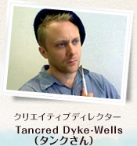
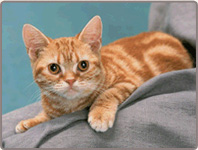

---
自由に絵を描くことができるモードがありますが、レッスン以外で描くとしたら、どんなモチーフがオススメですか？

DSiウェア版でも『絵心教室ＤＳ』でも、DSiならカメラの機能が使えますので、自分で描いてみたいものを撮影してモチーフにしてみてください。写真を輪郭だけにして見たり、主に色がついている部分はどこなのかを見たりできるフィルタ機能もついています。

『絵心教室ＤＳ』には、あらかじめ50枚以上のモチーフとなる写真が入っていますので、それを使うのも良いと思います。レッスンより少し難しいモチーフもありますが、写真は私と寺崎も含めて実際に描いてみて選んでいるので、難しすぎて全然描けないようなものは入っていないはずです。

全体としては「自然物」、たとえば動物、景色、花、果物などがオススメですね。


自然界ってふたつと同じものがなくて、多少違っていても似たものとして認識できるので、描いたものに満足感を得やすいらしいんです。それに対して、工業製品ってかなり似せて描かないと、満足度が上がらないのですよ。そういう難易度的な意味で、このゲームでは車とかの人工物のモチーフは少なくなっています。

腕に自信のある方は、肖像画を描くことをオススメします。これはレッスンではカバーしていないモチーフです。人の顔はじっくり綿密に観察する必要がありますし、表情もドンドン変わるので、もしかすると最も難易度が高いものかもしれないですが、大いに魅力的なモチーフであることも確かです。何度か練習してから、自分や友だちの写真を撮影して描いてみてください。
---
人物が難しいというのも、似せないとダメだからでしょうか？

目があるものは難しいらしいですよ。大きさや両目の位置が少しでも違うと似なくなるみたいです。

なので、目をひとつしか描かなくていい横からの絵だと、まだごまかしがきくというのをタンク先生から聞いたことがありますね。

そうですね。まず横顔から始めて、自信がついたら正面とか斜め45度とかからの角度を試してみると良いと思います。
---
実際にこのソフトで描かれた絵をご覧になってどうでした？

デバッグの際は結構みなさんレッスンのモチーフ関係なく自由に描いていましたね。その人の独特の世界観がかいま見えたというか（笑）。このゲームは世界で発売しているんですけど、アメリカのテスターさんが、なぜか広大な草原の上に大量のタコスが落ちている絵を描いてきたり（笑）。宇宙空間で何かが爆発しているような絵とかもありましたね。

人物だったり既存のキャラクターだったり、みなさん本当に思い思いにいろんな絵を描かれていましたね。
---
そのほか何か印象的だったものはありますか？

DSiウェア版を購入された日本人の方が描いた絵を、インターネットで見たことがあります。本当にものすごくうまくて、レッスンの絵も完全に私たち先生よりうまかった（笑）。

でも、レッスンの先生の絵は、うますぎると生徒のやる気がなくなるんで、あえて少しヘタに描いてもらったところもかなりあるんですよ。

あと、任天堂のテスターの方が描いたマネの『笛を吹く少年』の模写もすごかったですね。

テスターの間でも、この人だけソフトのバージョンが違うんじゃないかと言われていましたね（笑）。

ポテンシャルとしてはこれだけのものがあるということの良い例だと思いますね。